From Stellar Death to Element Birth
the role of nuclear reactions in supernovae explosions
Thanassis Psaltis (@psaltistha)
Triangle Universities Nuclear Laboratory &
North Carolina State University
April 20, 2023
Cyclotron Seminar | Texas A&M University
Image Credit: NASA/CXC/DSS/Rutgers/K.Eriksen et al.
Slides available at
http://psaltisa.github.io/talks
Acknowledgements
Alan Chen
Almudena Arcones
Melina Avila
Barry Davids
 Camilla Juul Hansen
Annika Lennarz
Richard Longland
Peter Mohr
Fernando Montes
Chris Ruiz
Camilla Juul Hansen
Annika Lennarz
Richard Longland
Peter Mohr
Fernando Montes
Chris Ruiz
+ many graduate students!
 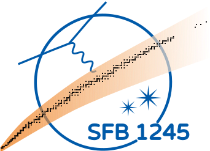
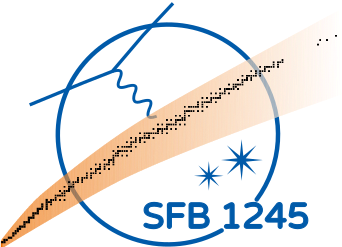

How I see nuclear astrophysics
 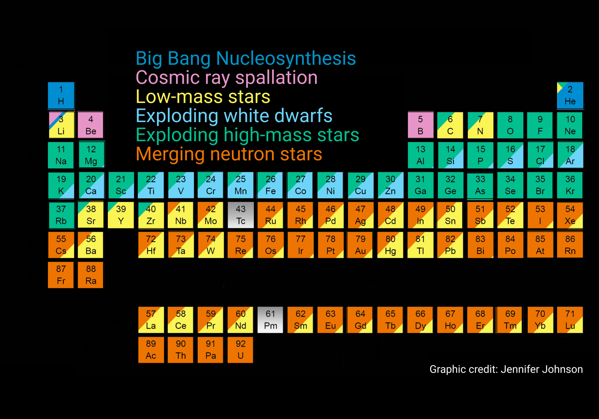
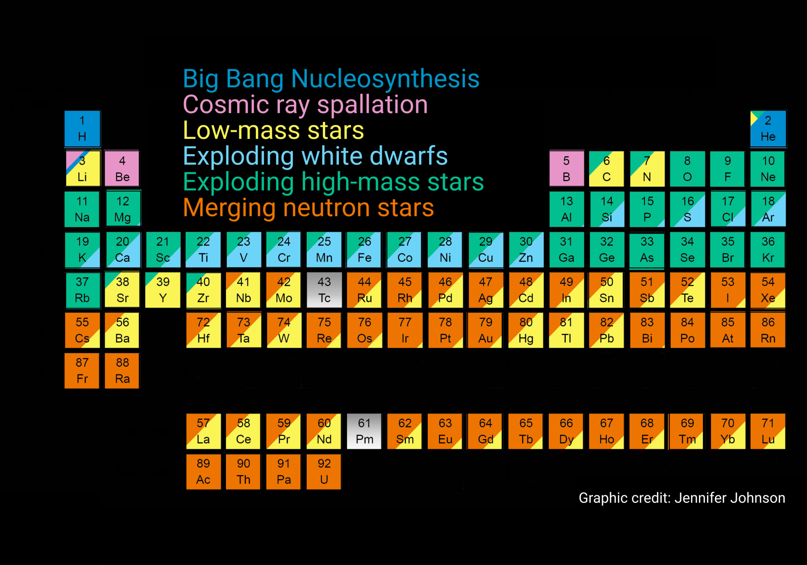
How were the elements from iron to uranium made?
How I see nuclear astrophysics
https://digital-photography-school.com/creative-uses-for-the-gimp-jigsaw-pattern/Nuclear reaction networks
are an essential tool for Nuclear Astrophysics
C. Jiang et al., New J. Phys. 23 083035 (2021)
How do we identify
important reactions?
Sensitivity studies guide our way
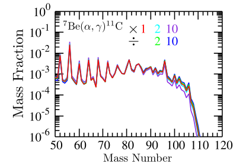Same model, but different nuclear input!
Why study the $\mathrm{^7Be(\alpha,\gamma)^{11}C}$ reaction?
- Affects the number of $\mathrm{^{56}Ni}$ during the $\nu p$-process, and
the production of $A \sim 100-110$ neutron-deficient species.
S. Wanajo, H.-T. Janka and S. Kubono, Astrophys. J. 729, 46 (2011)
- Its rate is not well known over the relevant energy region.
Only 2 measured resonances (NACRE-II).Y. Hu et al. Nucl. Phys. A 918, 61 (2013) • G. Hardie et al., Phys. Rev. C 29, 1199 (1984)
M. Wiescher et al., Phys. Rev. C 28, 1431 (1983) • H. Yamaguchi et al., Phys. Rev. C 87, 034303 (2013)Constrain the reaction rate for $\mathrm{^7Be(\alpha,\gamma)^{11}C}$ at $\nu p$-process temperatures
How to measure the $\mathrm{^7Be(\alpha,\gamma)^{11}C}$
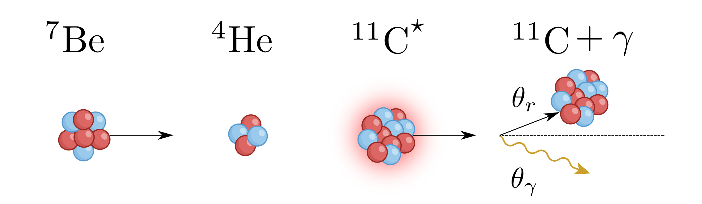
reaction in a labC.R. Brune and B. Davids, Annu. Rev. Nucl. Part. 65, 87 (2015) • C. Rolfs and C.A. Barnes, Annu. Rev. Nucl. Part. 40, 45 (1990)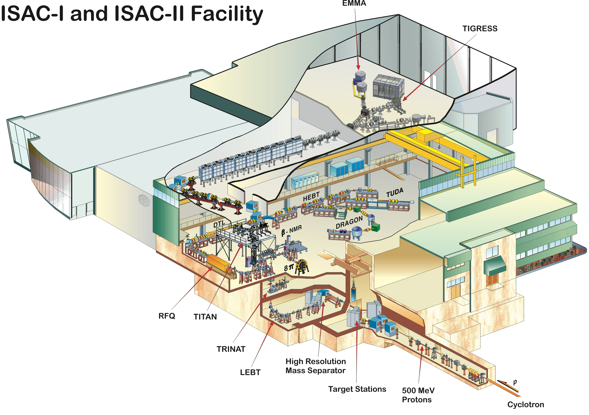 The DRAGON recoil separator 🐲
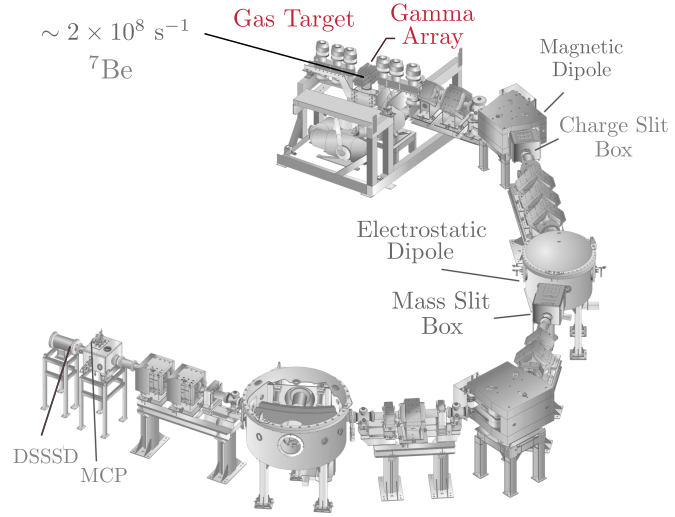 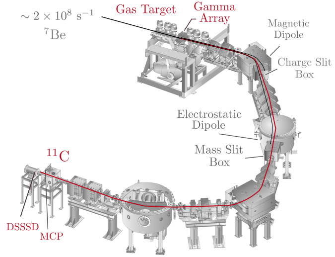D.A. Hutcheon et al., Nucl. Instr. Meth. Res. A 498, 190 (2003)Reactions in inverse kinematics
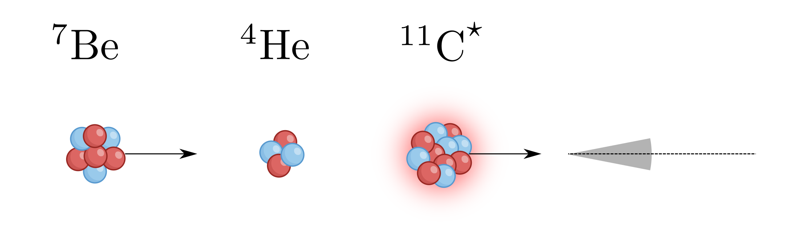 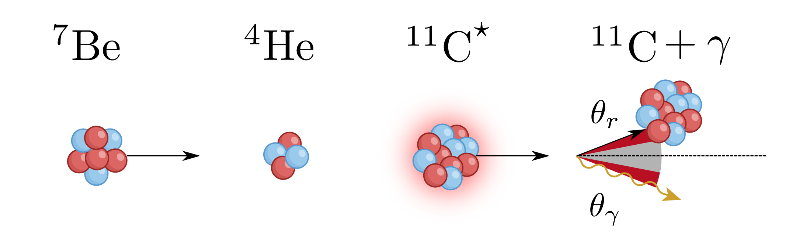DRAGON's acceptance $ -~\mathrm{\theta_{DRAGON} \sim 21~mrad}$
$\mathrm{^7Be(\alpha,\gamma)^{11}C - \theta_{r,max} \sim 43~mrad}$
C. Ruiz, U. Greife and U. Hager, Eur. Phys. J. A 50, 99 (2014)Can DRAGON can measure $\omega \gamma$ of reactions
with $\mathrm{\theta_{r,max}>\theta_{DRAGON}}$ ?
Proof-of-principle test: $\mathrm{^6Li(\alpha,\gamma)^{10}B}$A. Psaltis et al., Nucl. Instrum. Methods Phys. Res. A 987, 164828 (2021)DRAGON can measure $\omega \gamma$ of reactions with $\mathrm{\theta_{r,max}>\theta_{DRAGON}}$
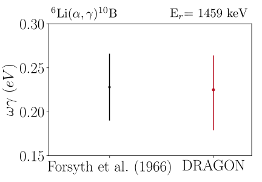$\mathrm{\omega \gamma_{lit}= (0.228 \pm 0.038)~eV}$
$\mathrm{\omega \gamma_{DRA}= 0.225^{+0.025}_{-0.035} (stat.) \pm 0.030 (syst.)~eV}$A. Psaltis et al., Nucl. Instrum. Methods Phys. Res. A 987, 164828 (2021)Measure the $\mathrm{^7Be(\alpha,\gamma)^{11}C}$ reaction
The DRAGON recoil separator 🐲
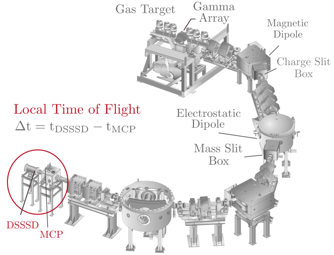D.A. Hutcheon et al., Nucl. Instr. Meth. Res. A 498, 190 (2003)$\mathrm{^7Be(\alpha,\gamma)^{11}C}$ PID plot
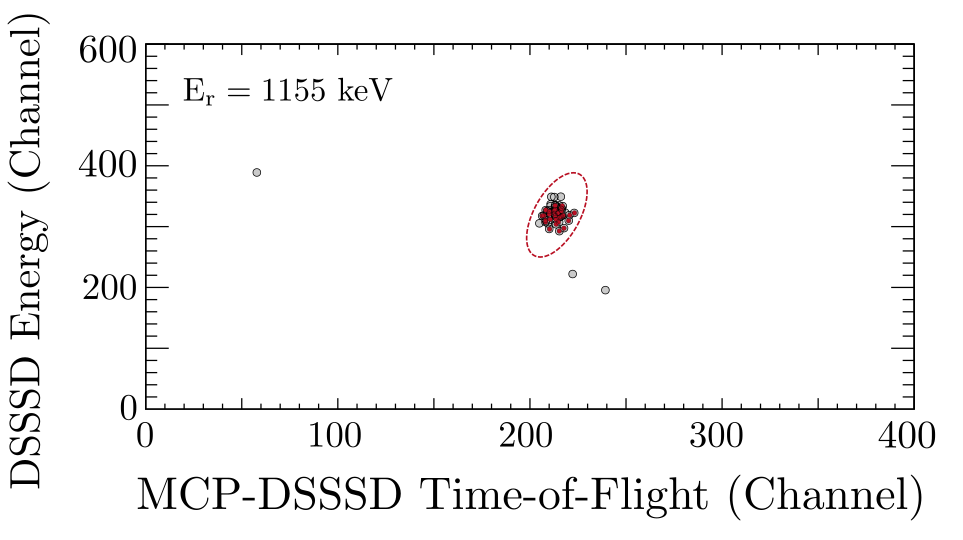A. Psaltis et al., Phys. Rev. C 106, 045805 (2022)$\mathrm{^7Be(\alpha,\gamma)^{11}C}$ BGO plot
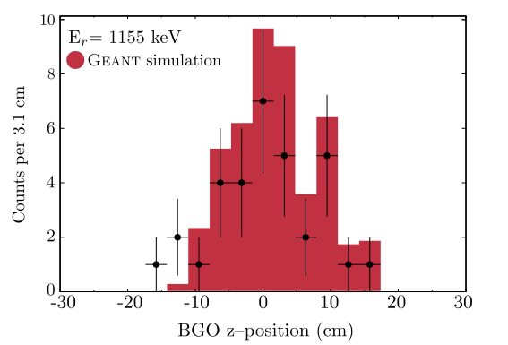A. Psaltis et al., Phys. Rev. Lett. 129, 162701 (2022)$\mathrm{^7Be(\alpha,\gamma)^{11}C}$ resonance strength results
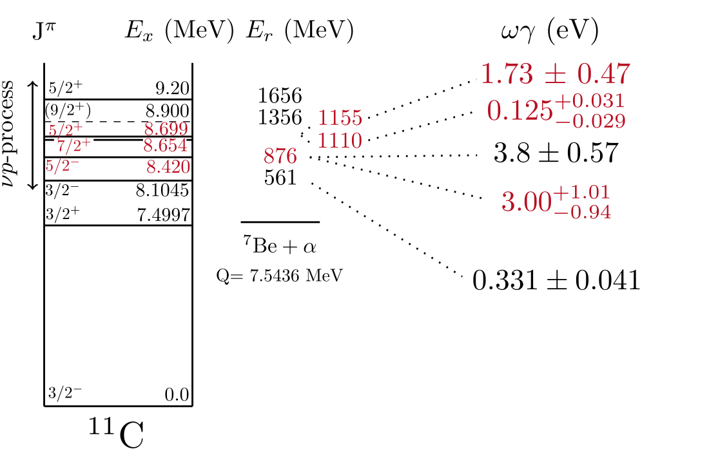A. Psaltis et al., Phys. Rev. Lett. 129, 162701 (2022) • A. Psaltis et al. Phys. Rev. C 106, 045805 (2022)The new $\mathrm{^7Be(\alpha,\gamma)^{11}C}$ reaction rate
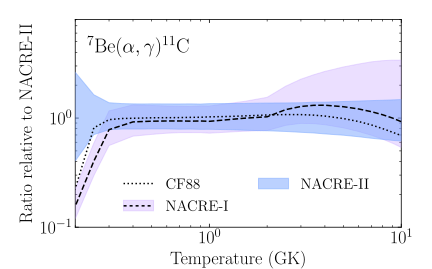 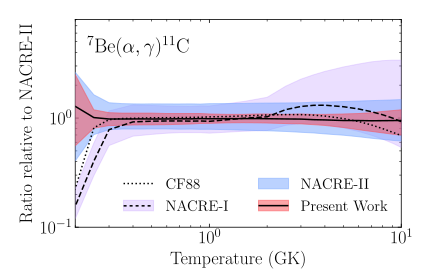We decreased the rate uncertainty to $\approx 10\%$ over $T= 1.5-3$ GK
Take-home message #1
We measured the $\mathrm{^7Be(\alpha,\gamma)^{11}C}$ reaction using DRAGON and constrained its rate over $\nu p$-process energies.
How I see nuclear astrophysics
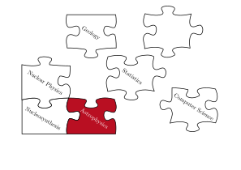
HD 122563 (DSS2/ Aladin Sky Atlas)What do the old stars reveal to us?
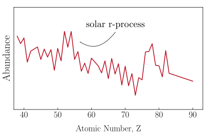 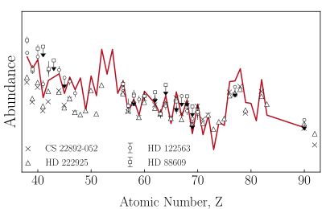 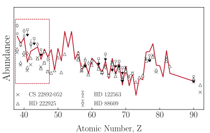See also: C. Sneden, J. J. Cowan and R. Gallino, Annu. Rev. Astron. Astrophys. 46, 241 (2008)
⚠️ Solar r-process = Solar total - Solar s-process - Solar p-processHow many processes contribute to the production of elements between Sr and Ag?
What is the impact of the
$\mathbf{(\alpha,xn)}$ reactions
in the weak $r$-process?How I see nuclear astrophysics
What about presolar grains?
 P. R. Heck et al., PNAS 117, 1884 (2020)
P. R. Heck et al., PNAS 117, 1884 (2020)How well do we know the $(\alpha,xn)$ reaction rates?
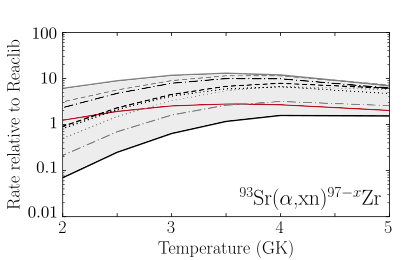The $(\alpha,xn)$ reaction rates are sensitive to the $\alpha$-optical model potential and can differ by up to two orders of magnitude.
J. Pereira and F. Montes, Phys. Rev. C 93, 034611 (2016) • P. Mohr, Phys. Rev. C 94, 35801 (2016)How I see nuclear astrophysics
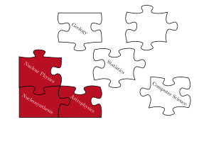The impact of new $(\alpha,n)$ reaction rates to
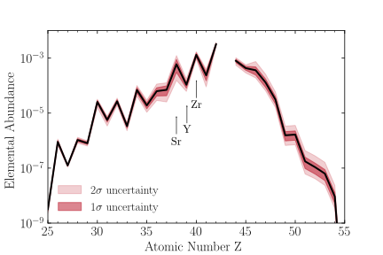
elemental abundancesSame model, but different $(\alpha, xn)$ reaction rates!
A. Psaltis et al., Astrophys. J 935, 27 (2022)The impact of new $(\alpha,n)$ reaction rates
to elemental abundance ratios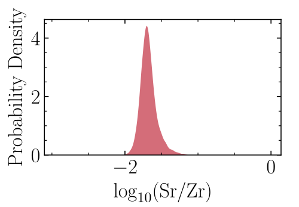 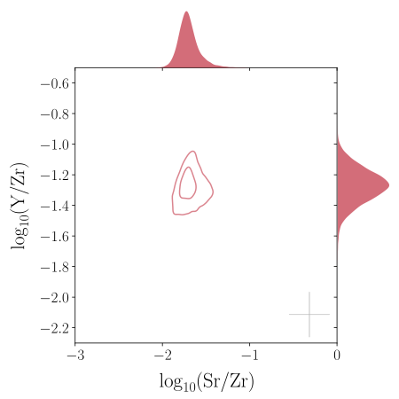A. Psaltis et al., Astrophys. J 935, 27 (2022)Combine observations, astrophysical modeling and nuclear physics uncertainties
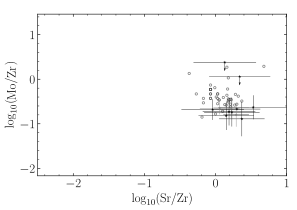 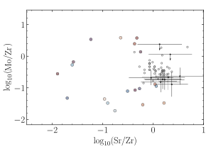 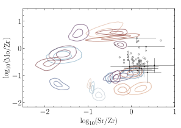A. Psaltis et al., Astrophys. J 935, 27 (2022)Which are the most important
$\mathbf{(\alpha,xn)}$ reactions
for the weak $r$-process?Finding the most important $(\alpha,n)$ reactions
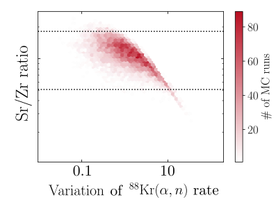
for the weak $r$-processThe most important $(\alpha,n)$ reactions
for the weak $r$-process- $\mathrm{^{84}Se}$, $\mathrm{^{87-89}Kr, ^{93}Sr}$
Affect many elemental ratios in many astrophysical conditions
- $\mathrm{^{86}Br,^{86, 90}Kr, ^{87-89}Rb, ^{91, 92, 94}Sr, ^{94}Y}$
Affect few elemental ratios in many astrophysical conditions
- $\mathrm{^{85}Se, ^{85}Br}$
Affect many elemental ratios in few astrophysical conditions
- $\mathrm{^{63}Co, ^{67}Cu, ^{79, 81}Ga, ^{76}Zn, ^{80, 82}Ge,
^{83}As}$
$\mathrm{^{87, 90, 91}Rb, ^{88-90}Sr, ^{95, 96}Y, ^{96-98}Zr}$Affect few elemental ratios in few astrophysical conditions
Take-home message #2
We combined observations, astrophysical modeling and nuclear theory
to study the impact of $(\alpha,xn)$ reactions to the weak $r$-processCan we study these $\mathbf{(\alpha,xn)}$ reactions in the lab?
First measurement of the $\boldsymbol{\mathrm{^{93}Sr}(\alpha,xn)\mathrm{^{96-x}Zr}}$ reaction
$\mathrm{^{93}Sr}(\alpha,xn)\mathrm{^{96}Zr}$ at Argonne with MUSIC
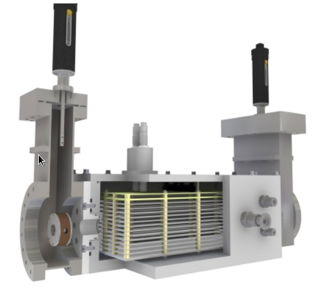 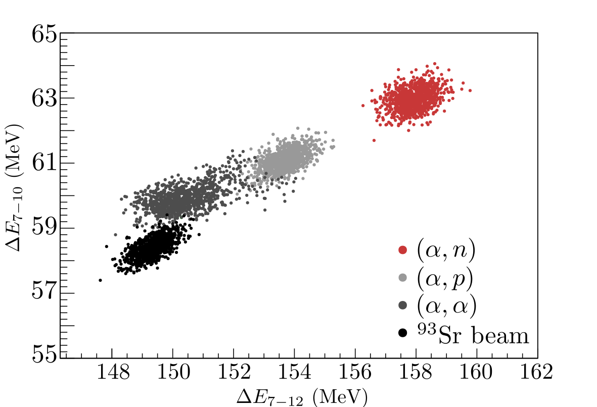
M. L. Avila et al., Nucl. Instrum. Methods Phys. Res A 859, 63 (2017)
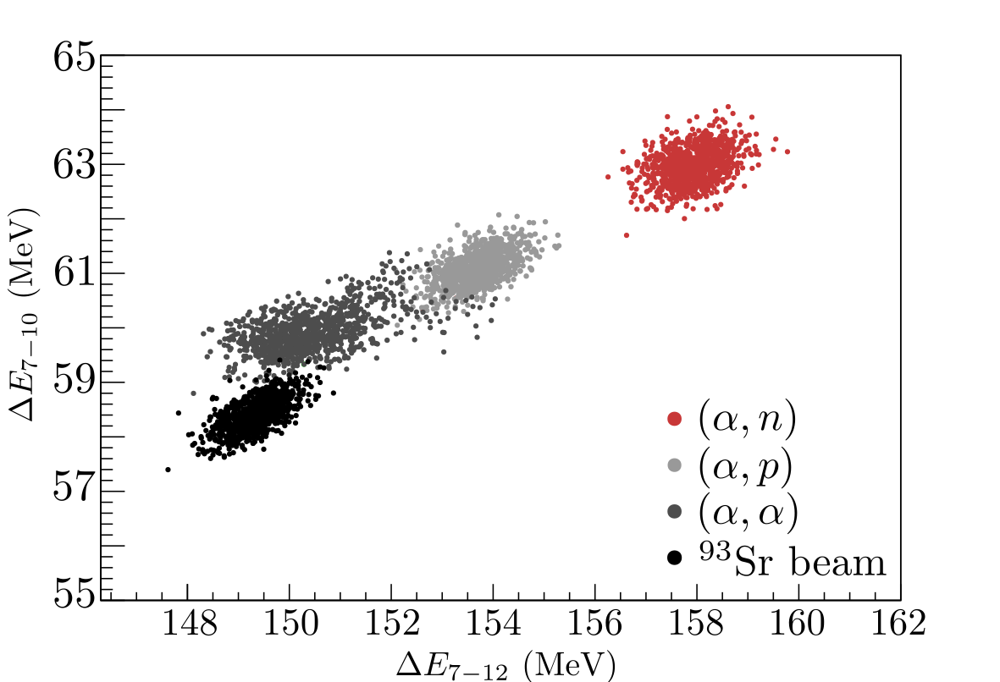
M. L. Avila et al., Nucl. Instrum. Methods Phys. Res A 859, 63 (2017)
- Re-accelerated $\mathrm{^{93}Sr}$ beam from $\nu$CARIBU.
- Close to 100% efficiency due to its segmented anode structure. Self-normalizing, no additional monitor detectors are needed.
- Measure a large range of excitation functions of angle and energy integrated cross sections using single beam energy
Proposal #1923, PI: Psaltis, co-PI: OngMeasurement of $\boldsymbol{(\alpha,xn)}$ reactions at FRIB using SECAR
Most of the relevant beams are accessible now!
 FRIB PAC2 expected beam rates
FRIB PAC2 expected beam ratesThe SECAR recoil separator
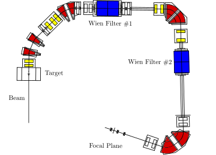 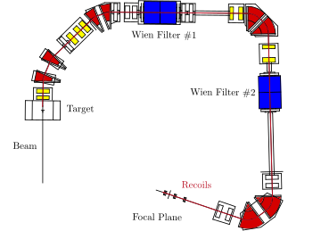G. Berg et al., Nucl. Instrum. Methods Phys. Res A 877, 87 (2018)What we expect in the near future
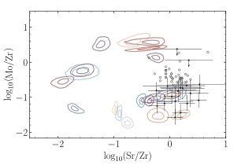More observations of old stars and measurements on the key $(\alpha, xn)$ reactions will help us constrain the production site of the elements between Sr and Ag.
Take-home messages
- We measured the $\mathrm{^7Be(\alpha,\gamma)^{11}C}$ reaction using DRAGON and constrained its rate over $\nu p$-process energies.
- We combined observations, astrophysical modeling and nuclear theory to study the impact of $(\alpha,xn)$ reactions to the weak $r$-process.
- Experiments in the current and next-generation facilities, along with multimessenger observations and theoretical modeling will help us better understand the origin of the elements.
- $\mathrm{^{84}Se}$, $\mathrm{^{87-89}Kr, ^{93}Sr}$